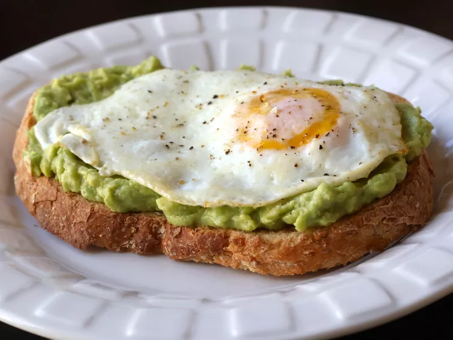

Egg and Avocado on Toast

Description
I love avocado toast, and if you add an egg to it you have a full meal.
Sometimes I use balsamic vinegar to flavor the avocado instead of the lemon juice.
You can make the egg any way you like, but I like it best fried or poached.
Ingredients
- 1 teaspoon butter
- 2 eggs
- 2 slices multigrain bread
- 1 ripe avocado, pitted, peeled
- 1 teaspoon lemon juice, or to taste
- 1 pinch cayenne pepper
- sea salt to taste
- ground black pepper to taste
Steps
- Melt butter in a skillet over medium-low heat.
Crack eggs into the skillet side by side and cook until
eggs are white on the bottom layer and firm enough to flip,
2 to 3 minutes. Flip eggs, trying not to crack the yolk,
and cook until egg reaches desired doneness, 2 to 5 minutes more.
- Meanwhile, toast bread slices to desired doneness, 3 to 5 minutes.
- Mash avocado in a bowl; stir in lemon juice, cayenne pepper,
and sea salt. Spread avocado mixture onto toast.
Top with fried egg and season with sea salt and pepper.